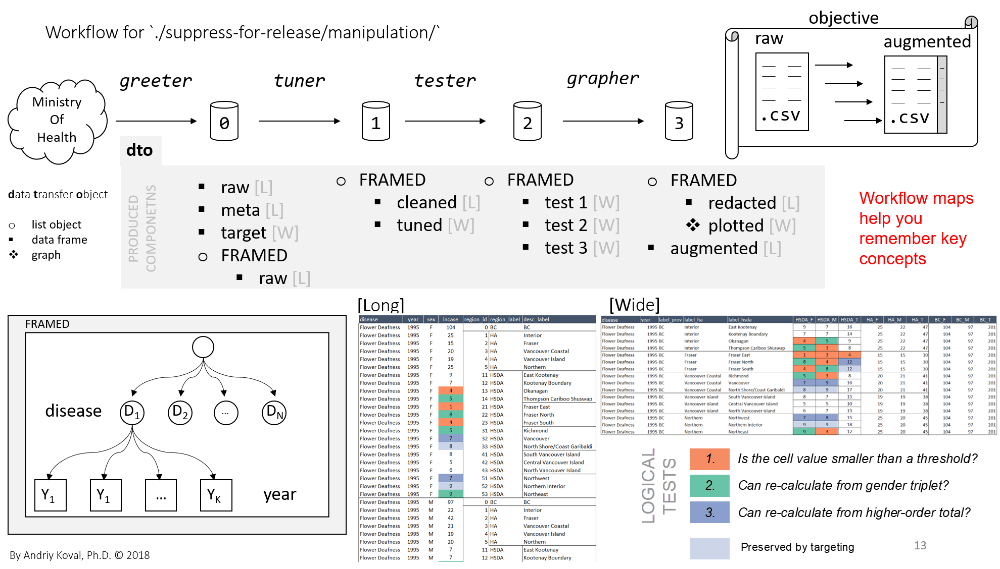

Paper presented at the 2020 conference of the ’International Population Data Linkage Network Conference, Adelaide, Australia. November 2020.

When reporting disease rates to the public, a health system must take precaution to protect released data from re-identification risks. While specific guidelines and methods vary across data systems and governances1, redaction of cells with small values is a key component in any approach for preparing data for public release. These preparations, when conducted manually, have proven to be arduous, time consuming, and prone to human error. Although finding a “small” value (e.g. “< 5” ) is straightforward, detecting conditions in which suppressed values could be recalculated from related cells involves human judgment.
Guided by the real-world objective to reports the rates of chronic diseases in British Columbia, we aimed to design a reproducible workflow that would augment human decision-making and offer a nimble quality control tool, approachable by epidemiologists without technical background. Our workflow (1) splits data into disease-by-year data frames of a specific form, (2) applies a sequence of algorithms trained to recognize conditions that made recalculation of suppressed values possible and (3) prints a graph for each case of suggested automatic redaction to be confirmed by a human.
The augmented suppression system was successfully integrated into the maintenance of Chronic Disease Dashboard, an online reporting tool of the Observatory for Population and Public Health designed to address the gap in surveillance of chronic diseases in British Columbia. Anticipating the evolution of suppression logic, we isolated the logical tests responsible for redaction and provided several options to vary the degree of preserved information.
Instead of employing a complex generalizable solution, we make a case for organizing the procedure for small cell redaction as a data visualization task, allowing for straightforward quality control of suppression decision and thus more approachable to a non-technical audience, as well as for employing such learning devices as workflow maps and function dependency trees for structuring applied projects and ensuring their reproducibility.